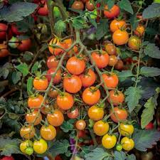
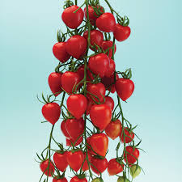
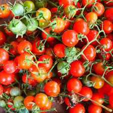
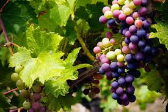
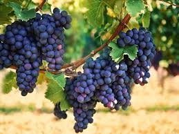

Tomato is the edible berry of the plant Solanum lycopersicum, commonly known as the tomato plant. The species originated in western South America. The wild ancestor of the tomato, Solanum pimpinellifolium, is native to western South America.The tomato is the edible berry of the plant Solanum lycopersicum, commonly known as the tomato plant. The species originated in western South America, Mexico, and Central America. Its domestication and use as a cultivated food may.
  
Potato (/pəˈteɪtoʊ/) is a starchy root vegetable native to the Americas that is consumed as a staple food in many parts of the world. Potatoes are tubers of the plant Solanum tuberosum, a perennial in the nightshade family Solanaceae. Wild potato species can be found from the southern United States to southern Chile. Genetic studies show that the cultivated potato has a single origin, in the area of present-day southern Peru and extreme northwestern Bolivia.

Grape is the most cultivated varieties are wind-pollinated with hermaphroditic flowers containing both male and female reproductive structures, while wild species are dioecious. These flowers are grouped in bunches called inflorescences. In many species, such as Vitis vinifera, each successfully pollinated flower becomes a grape berry with the inflorescence turning into a cluster of grapes. Grapes provide a good source of vitamin K, calcium, magnesium, and potassium—all of which support bone health. A lack of those nutrients may increase your risk of bone fractures.

